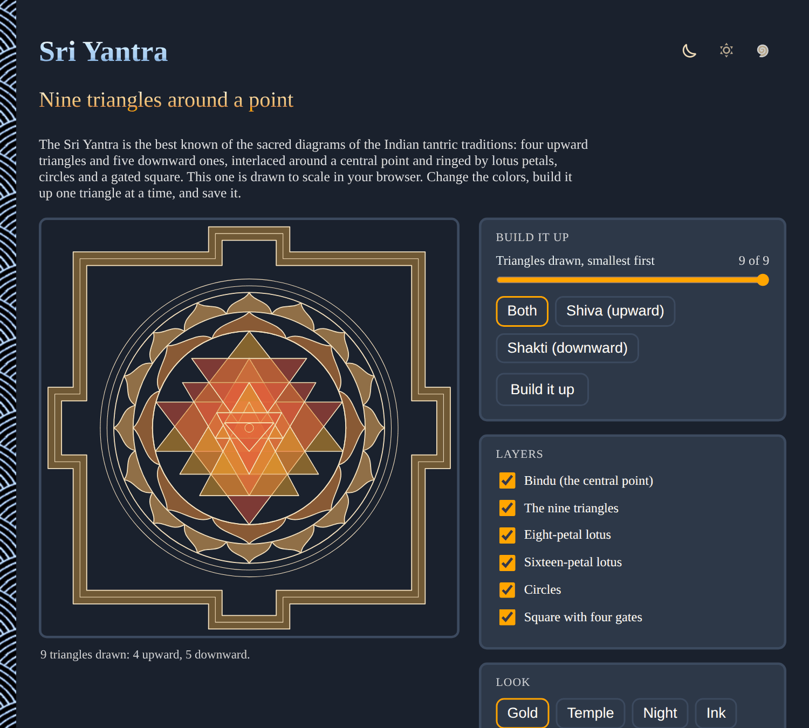

What the Sri Yantra is, and where it comes from.

The Sri Yantra, also called the Sri Chakra, is a geometric diagram from the Hindu tantric traditions, built from nine interlocking triangles arranged around a single point.
Sri means auspicious or venerable, and a yantra is an instrument or diagram used as a support for worship and meditation, so the name means roughly "venerable instrument." It is the central diagram of Sri Vidya, a tradition of goddess (Devi or Shakti) worship within Shaktism. Practitioners meditate on it, trace it in ritual (puja), and sometimes install it as a three-dimensional pyramid (Meru) in temples. It is read on two levels at once: as a map of the outer cosmos and as a map of the subtle body, so that worshipping it outwardly and looking inward are treated as the same act.
However it is read, the figure is built from a small set of parts:
The four upward-pointing triangles are read as Shiva, the masculine or consciousness principle, and the five downward-pointing ones as Shakti, feminine and active energy. Together they meet at the bindu, where the two are said to become one. This is the same union celebrated across Shakta and tantric thought more broadly: static awareness and dynamic energy as two aspects of a single reality, rather than opposites.
Tradition reads the completed yantra as nine enclosures, called avaranas, counted from the outside in. Each is named for what it is said to grant a worshipper who reaches it in meditation.
In the Sri Vidya tradition each enclosure is also linked to its own form of the Goddess and its own group of attendant deities, with the details, and even the exact count and arrangement of triangles, varying somewhat between lineages and texts.
The Sri Yantra belongs to a tantric current that took shape over roughly a thousand years, and scholars continue to debate the precise dating of its early sources.
Diagrams and mantras for goddess worship appear in tantric texts from the early medieval period, and the Sri Yantra in something close to its familiar form is described and prescribed for worship in later Sri Vidya literature. It became especially associated with the Saundarya Lahari ("Wave of Beauty"), a devotional poem to the goddess traditionally attributed to the philosopher Adi Shankaracharya, though many scholars think at least part of it is a later composition. From South India, Sri Vidya worship of the yantra spread through monastic centers such as the Shankaracharya mathas, where large stone or metal Meru-shaped Sri Yantras are still installed and worshipped today.
This app takes its triangle coordinates from a published construction shared on TeXample.net (CC BY-SA 4.0). In it, the two largest triangles have every corner on the outer circle, and the whole figure is symmetric left to right. Other constructions exist and give slightly different proportions; drawing a Sri Yantra by hand is traditionally treated as a discipline in its own right, not just a matter of geometry.